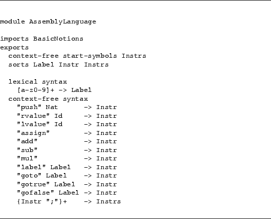

Assembly language
The instructions of the assembly language for the stack machine are defined below[ in Figure ]CODE:assemblylanguage.
Figure 57:
Asf+Sdf specification for AssemblyLanguage

Jurgen Vinju 2006-03-04